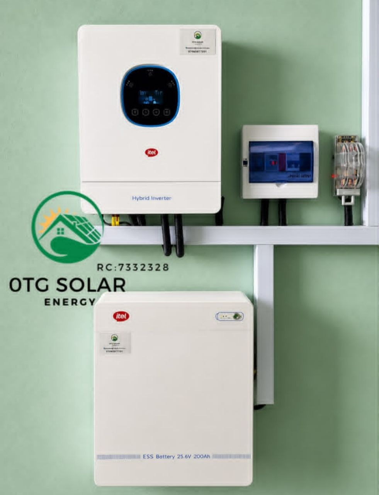
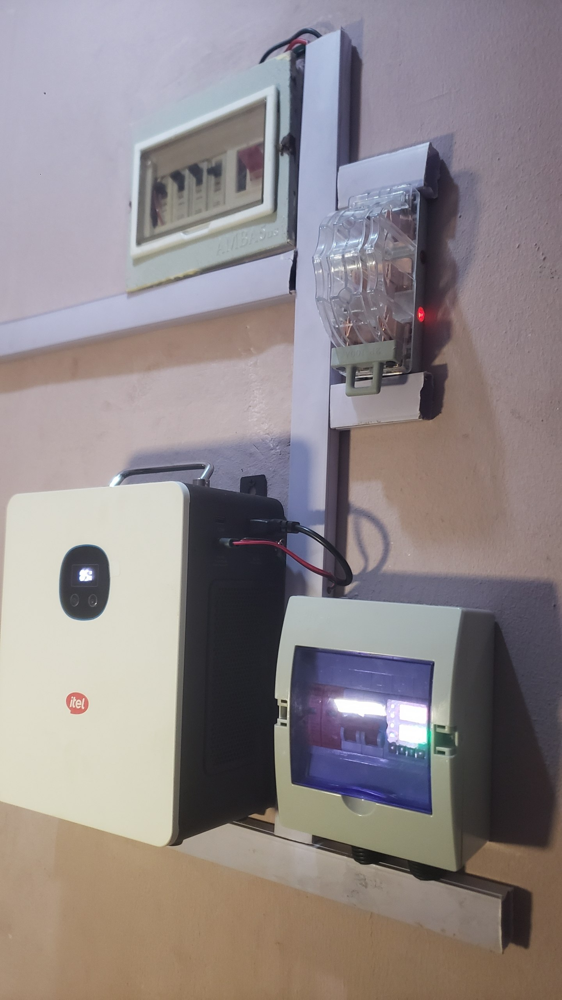

1.5 kVA Solar Installation in Ikorodu
A 1.5 kVA solar inverter installation in Ikorodu, Lagos, with installation photographs from the roof and equipment location.
Project overview
Ikorodu, Lagos
Project type: 1.5 kVA solar inverter installation · Completion date not provided.

System installed
Configuration details
The supplied image identifies this project as a 1.5 kVA solar inverter installation. Exact battery capacity, panel wattage and completion date were not supplied.
We’ll add verified specifications, project date, and any available video or social post links when provided.
Project results
Installation photographs
Related projects
More installations



Planning a similar installation?
Tell us your location, appliance loads and backup needs. We’ll help confirm a suitable system design.
Request a similar installation on WhatsApp ↗